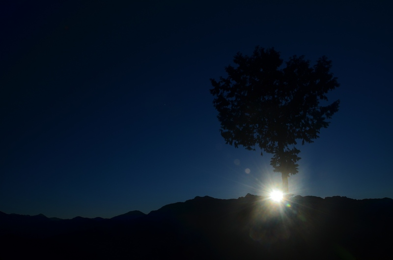
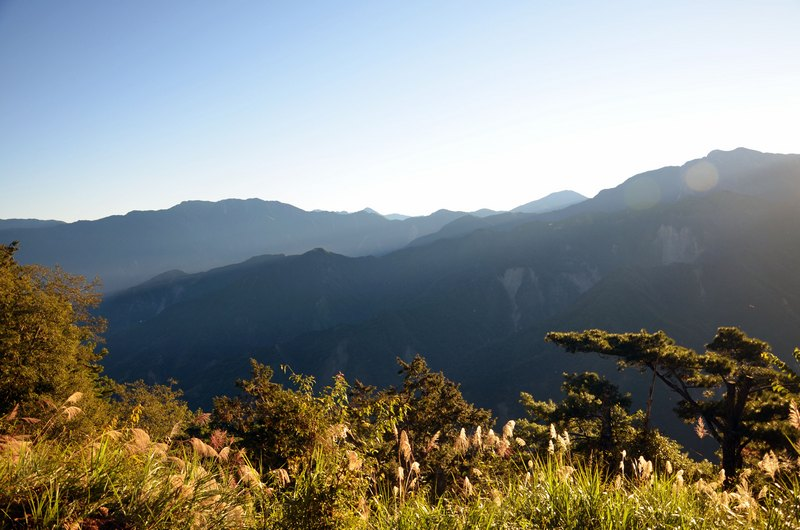
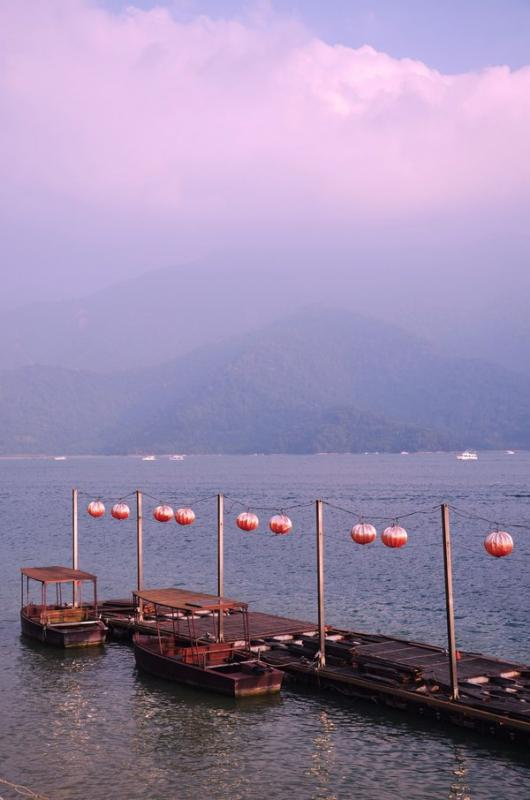
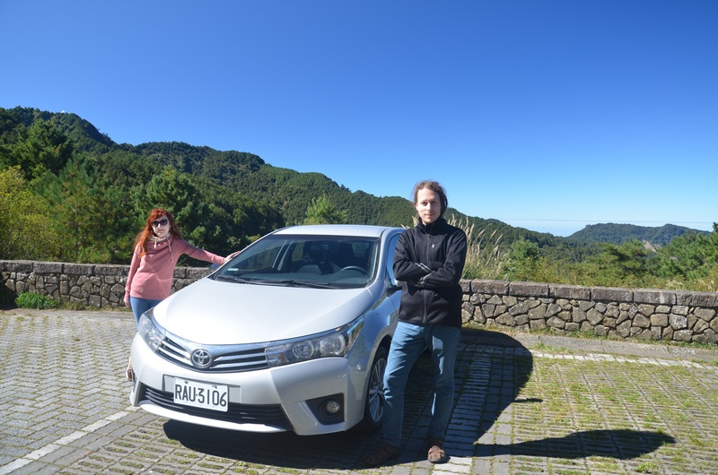
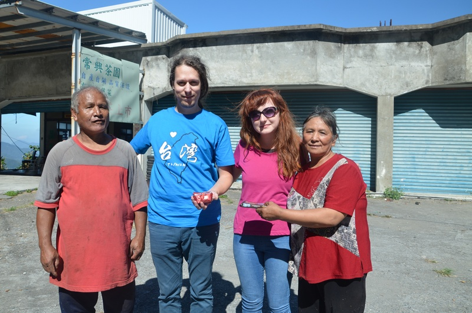
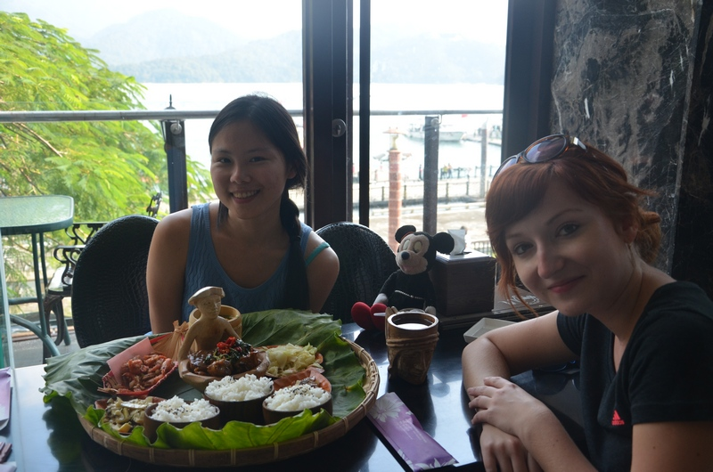
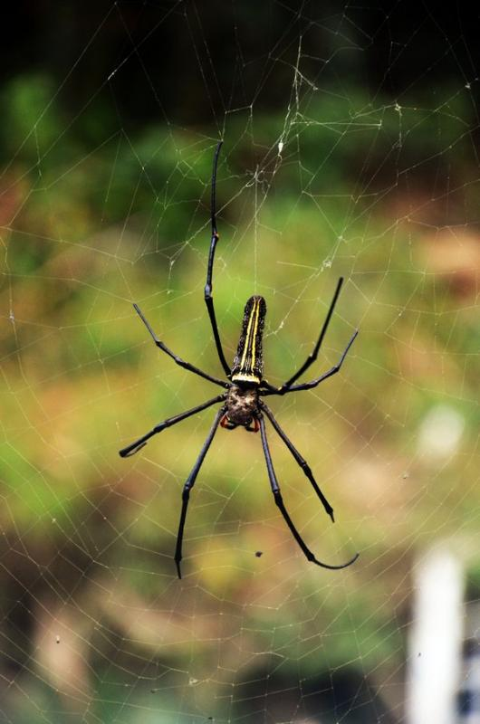
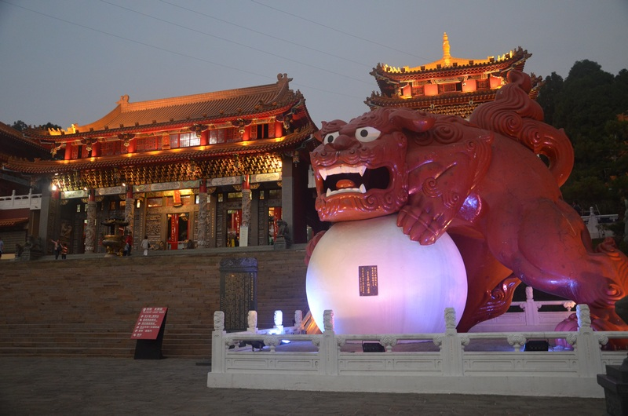
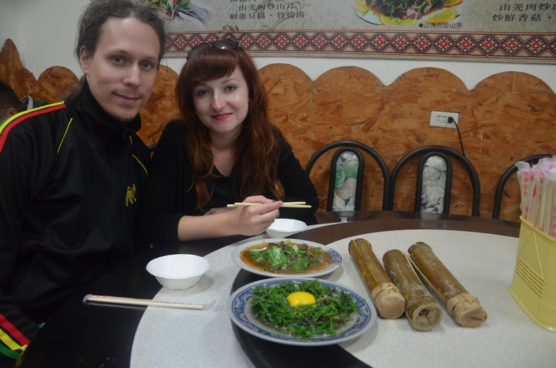

Zažili jsme na Taiwanu už i lepší probuzení - dneska nám budík zvonil asi o půl páté ráno… Ale když jste v Alishanu, přivstat si na východ slunce je zde prostě povinností. A jak se brzy ukázalo, nebyli jsme zdaleka jediní, kdo si na dnešní ráno nařídil budík. Na nádraží hotové davové šílenství! Na místo, odkud je možné východ slunce pozorovat, je samozřejmě možné dojít i pěšky, ale to by znamenalo posunout budík minimálně o další hodinu dopředu - a tak většina turistů využívá úzkokolejku. Většinou vypravují takhle brzo jenom jeden vlak, ale že nás bylo tolik, nakonec jely vlaky dva - což bylo naše jediné štěstí, protože do toho prvního jsme se taktak nevlezli!
Na místo jsme ještě v polospánku dorazili asi za 25 minut. To už se začalo pomalu rozednívat. Teď ještě rychle najít volné místo pro stativ a pak už nezbývalo, než čekat, až za vrcholem Chushanu začnou vylézat první sluneční paprsky.

Chvíle, kdy se noc mění v den
Před východem slunce byla opravdu strašná zima, a to jsem na sobě měla veškeré své nejteplejší oblečení (celkem asi 5 vrstev včetně softshellové bundy). Jakmile se sluníčko vyhouplo nahoru a všechno zalilo svými paprsky, bylo to, jako by vás někdo zabalil do huňaté deky - tak moc se najednou příroda proměnila.

Konečně sluníčko
A když jsme zjistili, že tady nahoře prodávají horkou čokoládu, bylo ještě líp :-). Čekala nás ovšem ještě asi hodinová cesta chladným lesem zpátky do turistického centra.
Naší další zastávkou se mělo stát Jezero Slunce a Měsíce. Jedná se o největší sladkovodní jezero na Taiwanu, ležící ve výšce 762 m, které nabízí jedny z nejhezčích přírodních pohledů.

Sun Moon Lake
Už jen cesta k němu byla mimořádným zážitkem. Jakmile jsme začali zase klesat z hor Alishanu o něco níž, otevíraly se nám nádherné výhledy na hluboká údolí a čajové plantáže. Čas od času jsme vždycky zastavili na nějaké pěkné vyhlídce, abychom si mohli tu nádhernou krajinu vychutnat i jinak, než jen přes sklo auta.

Náš bourák :-D
Při jedné takové zastávce u malé rodinné výrobny čaje jsme se setkali s místními “aboriginals” - domorodci. Rozeznáte je na první pohled - nemají tak výrazné asijské rysy, naopak trochu připomínají americké indiány. Mendy se s nimi hned dala do řeči. Napadlo nás, že bychom si od nich mohli koupit nějaký čaj - bohužel ale nebyl zrovna čas sklizně (sklízí se dvakrát do roka) a zásoby z předchozí sklizně už měli vyprodané. Naprosto nás ale dojali, když donesli z domu svůj vlastní načatý balíček s tím, že to je poslední vzorek jejich čaje, který nám dnes můžou nabídnout. Jako poděkování jsme jim dali aspoň pohlednici Brna a lázeňské oplatky, kterých jsme si pro tato “náhodná setkání” doma v ČR prozřetelně nakoupili do zásoby. Tenhle červený balíček byl jeden z nejcennějších suvenýrů, které jsme si z Taiwanu přivezli. Jeho skutečnou hodnotu jsme odhalili až doma, když jsme si ho poprvé připravili - je skutečně vynikající!

Ještě foto na památku :)
Po tomto zajímavém intermezzu, které bychom nebýt Mendy, která nám dělala překladatelku, určitě nezažili, jsme pokračovali dál k Jezeru Slunce a Měsíce. Kolem jezera je celá řada zajímavých památek a turistických stezek. My jsme zaparkovali u přístaviště Shueishe, kde byla velká šance, že najdeme něco dobrého k jídlu - po cestě už nám totiž pěkně vytrávilo. Asi jsem se o tom během svého vyprávění ještě nezmiňovala, ale stolování v Asii se od toho, které známe my, docela zásadně liší. Zatímco u nás si každý objedná své vlastní jídlo, tady je zvykem objednat chodů hned několik a v menším množství, o něž se pak strávníci podělí. Při tom všem nám ale většinou nehrozilo, že bychom se přejedli k prasknutí. Už asi chápu, proč jsou Asiaté tak hubení :-D

Originální způsob servírování :)
Po obědě jsme se vypravili na procházku po břehu jezera, která se brzy změnila ve stezku odvahy. To když jsem se rozhlédla kolem sebe a zjistila, jaké krásné osminohé poklady úctyhodné velikosti zdejší bujná vegetace skrývá…

To nechcete potkat!
Navečer jsme se přemístili k chrámu Wenwu, který se dominantně tyčí nad jezerem. Než jsme si ho pořádně prohlédli, už se setmělo a byl nejvyšší čas najít si nějakou střechu nad hlavou. Příjemný hotýlek jsme nakonec objevili nedaleko domorodé vesničky Ita Thao. Měli jsme to od něj navíc blízko na noční trh :-).

Chrám Wenwu
Na večeři jsme si zašli do malé restaurace, kde nás opět čekaly pořádné gastro-orgie. Dodneška vlastně pořádně nevím, co jsme to tam jedli, ale bylo to prostě božské :-D. Mendy říkala, že je to něco na způsob zvěřiny. Vyzkoušeli jsme taky nějakou rybu, kterou nám servírovali přímo v hrnci, a poprvé jsme se tu setkali s “bambusovou rýží”, která se skutečně vaří a podává v bambusu.

Nejlepší “zvěřina” a bambusová rýže
Po večeři už byla většina pouličních obchůdků zavřená, a tak jsme se vydali zpátky do hotelu a na kutě. Čekal nás poslední den s Mendy a dlouho očekávaná návštěva termálních pramenů. Náš pobyt na Taiwanu se začínal pomalu, ale jistě krátit…